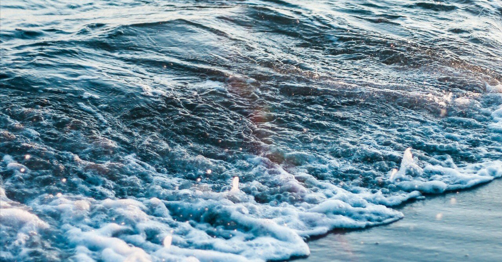

時間は一方向しか進めないのに、僕たちはなぜ過ぎ去った日々を思い返してしまうのだろう。
この世界に前しか見ていない人なんて、果たしているのだろうか。
前も後ろも、右も左も、何もかもを目にしたくない時、僕は海へと足を運ぶ。
顔も知らない世間の声に惑うのではなく、何も考えずに、寄せては返す波の音だけに耳を傾ける。そうしているだけで、気づかぬ間にこびりついていた心の汚れは、ゆっくりだが着実に洗い流されていく。
回想シーンから始まる小説や映画が好きだ。
あの不朽の名作『Stand by Me』においても、冒頭から主人公が少年時代を振り返り、当時を述懐する。
そして、ラストには「12歳の頃のような友達は、二度とできることはない」と語る。大人になる頃には失ってしまう純粋な友情が、ひと際際立つ名シーンだ。
今が積み重なることで時が前に進むのだとしたら、僕たちはこの瞬間も数え切れない過去を背負って未来へ歩み続けている。喜ばしい想い出も、哀しみに堪えない出来事も、何もかもを引っ提げて。
文章を書くことも、過去との対峙は避けられない。
何かを作る行為は、内面にある引き出しを開けて装飾することに等しい。それがお粗末なものであればあるほど、僕自身が恥を晒すことになるのだから、それはもう綿密に、少しでも確かな根拠を見つけるような感覚で自らの過去へと潜っていく。文筆とは、恐らくその作業の繰り返しなのだ。
替えの利かない人間になりたい。
過去も現在も、自身より優秀な人間しかいないと思ってきた僕にとって、それは叶いそうにもない夢のひとつ。
君じゃなきゃダメなんだ。君でないと意味がないんだよ。
一度たりとも、そう言われたことがあっただろうか。
何ひとつ傑出したものを持ち合わせない人間にとって、そんな言葉をかけられる未来は、もしかしたら永遠に訪れないのかもしれない。
でも、こうして海の声を聴いているだけで、不思議と自分を労わりたい気分になる。ほかの誰でもないこの人生を、どうにかこうにか生きてきたことが愛おしいとすら感じてしまうのは、少々感傷に浸りすぎだろうか。
そんな想いの中、改めて行き着いた答えは、唯一書く行為だけがほかの何よりも自分らしくいれるということ。
そして、可能性が僅かでもあるならば、僕は今この文章を読んでくれている貴方にとって、書き手として替えの利かない存在になってみたいと、密かに願う。
今はもうない過去を、在りし日の忘れ得ぬ人を懐かしむことは、僕の背中をそっと押してくれる。
思い出すだけで古傷が痛むような出来事もあったけど、どうやら前にしか進めない様子のこの世界で強く生きていくためにも、『Stand by Me』のような自分なりの回想シーンを日常に散りばめていきたいものだ。
そして、「考えても仕方のないことにいつまでも頭を悩ましていたなぁ」と、小さく笑いながら思い返すことが、今の僕のささやかな夢でもある。
現実から逃げたい時に決まって海に出かけるのは、大切な想い出のそばにはいつも海があったからかもしれない。
僕の場合はつまるところ、雑踏にもみくちゃにされるような毎日でも、心の拠り所としてそれが常に近くにあったからだと思う。この先も心が折れそうなことがあれば、そのたび海に行って耳を澄ませてみたい。
もしその時も海の声を聴けたのなら、未来の僕は何を語り、どんな答えを見つけるのだろう。それもまた、ちっぽけだけど楽しみな、小さな夢のひとつだ。